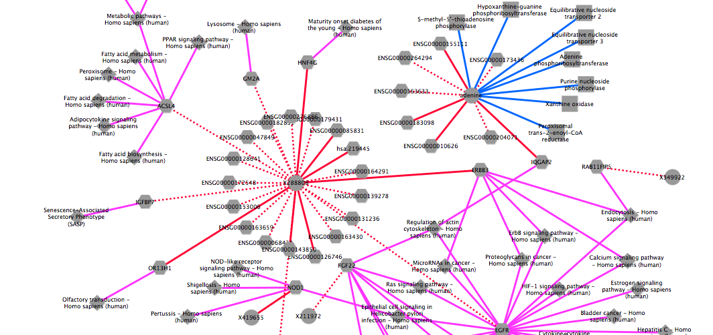

fetchCorrGrinnNetwork
To compute a weighted correlation network and expand the network with information from grinn internal database
- INPUT
The table summarizes important arguments
Argument Value Description datNormX data frame containing normalized-omic data Columns correspond to entities e.g. genes and rows to samples e.g. normals, tumors. Require 'nodetype' at the first row to indicate the type of entities in each column. datNormY data frame containing normalized-omic data It uses the same format as datNormX. Or it can be NULL, if there is only one omic dataset corrCoef numerical value from 0-1 The minimum absolute correlations to include edges in the output pval numerical value The maximum pvalues, to include edges in the output sourceTo entity type e.g. metabolite The correlation network can be expand from datNormX entites to a specific entity type, by providing a value to sourceTo targetTo entity type e.g. gene The correlation network can be expand from datNormY entites (if not NULL) to a specific entity type, by providing a value to targetTo - EXECUTE FUNCTION
Compute a correlation network of metabolites and genes and expand to the grinn network of metabolite-protein and gene-pathway
#1. load metabolomics data from a csv file datMet = read.csv("Lung_MET.csv", header=TRUE, row.names=1, stringsAsFactors=FALSE) #2. use only a subset of metabolomics data datMet = datMet[c(1:7,42:50),] #3. show dimensions of metabolomics data dim(datMet) #4. show the first 10 rows and 10 columns datMet[1:10,1:10] #!!--- NOTE: The following codes convert kegg ids to grinn ids. If the input data is already the grinn ids, these steps can be skipped. grinnID = convertToGrinnID(txtInput=colnames(datMet), nodetype="metabolite", dbXref="kegg") #call grinn function to convert ids grinnID = grinnID[!duplicated(grinnID[,1]),] #keep the first mapped id colnames(datMet) = lapply(colnames(datMet),function(x) ifelse(length(which(grinnID$FROM_kegg == x))>0,as.character(grinnID$GRINNID[which(grinnID$FROM_kegg == x)]),x)) #---------- END id conversion ----------# #5. load transcriptomics data from a csv file datGene = read.csv("Lung_GENE.csv", header=TRUE, row.names=1, stringsAsFactors=FALSE) #6. show dimensions of phenotypic data dim(datGene) #7. show the first 10 rows and 10 columns datGene[1:10,1:10] #8. execute function result <- fetchCorrGrinnNetwork(datNormX=datMet, datNormY=datGene, corrCoef=0.7, pval=1e-6, method="spearman", returnAs="tab", sourceTo="protein", targetTo="pathway") #display the first 10 edgelists result$edges[1:10,] - EXPORT OUTPUT
Export the network as tab-delimited files to visualize in Cytoscape
write.table(as.matrix(result$edges),"corrNwEdge.txt",sep="\t",row.names = F, quote = FALSE) write.table(as.matrix(result$nodes),"corrNwNode.txt",sep="\t",row.names = F, quote = FALSE) - VISUALIZATION
The figure is generated by Cytoscape 3.1.1 using grinn style (grinn.xml). It is corresponding to the cytoscape file corrNw.cys.

Diagram legend

References
Metabolomics and transcriptomics data used in this example are taken from the following publication:
- Wikoff WR, et al. Metabolomic markers of altered nucleotide metabolism in early stage adenocarcinoma. Cancer Prev Res (Phila) 2015;8(5):410-8.
- Zakaria N, et al. Human non-small cell lung cancer expresses putative cancer stem cell markers and exhibits the transcriptomic profile of multipotent cells. BMC Cancer 2015;15:84.
Go to HOME | fetchGrinnNetwork | fetchCorrGrinnNetwork | fetchDiffCorrGrinnNetwork | fetchModuGrinnNetwork | fetchGrinnCorrNetwork